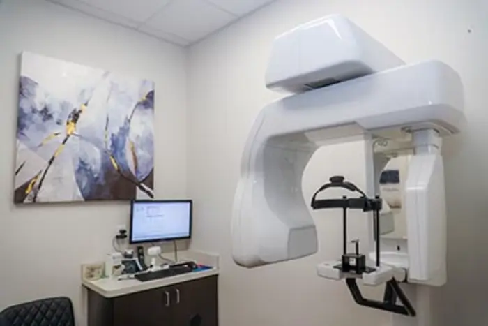

One missing tooth
An implant and crown may replace an individual tooth. The dentist checks the gap, adjacent teeth, bite and bone before recommending this approach or an alternative such as a bridge.
Starlite Dental · McKinney, Texas
Starlite Dental provides dental implants in McKinney to replace missing teeth. Start with an evaluation of your teeth, gums and bone, then discuss the treatment and alternatives that may fit you.
Your first step toward replacing a tooth
Understand the replacement
A dental implant replaces a tooth root with a post placed in the jawbone. The visible replacement tooth is a separate part of the treatment.
Ask whether a proposed estimate includes all the parts, rather than the implant post alone.
Explore restorative treatment optionsImplants may help replace one or more missing teeth, support chewing and restore the appearance of a gap. A single-tooth implant does not use neighboring teeth as bridge supports.
The dentist evaluates your gums, available bone, bite and overall health. Smoking, some health conditions and medicines can affect healing. Gum treatment, an extraction or bone preparation may need to come first.
Implants require surgery, healing, daily cleaning and ongoing dental visits. They can develop complications or fail. An examination helps you weigh the benefits, risks and alternatives for your situation.
Start with what is missing
The number of missing teeth changes the plan. The number of replacement teeth and the number of implant posts are not always the same.
A loose crown, soreness or a damaged replacement tooth needs a different assessment from a new implant consultation. Call and describe the existing implant problem so our team can discuss the right next step.
Planning, healing and the finished tooth
Your implant evaluation begins with an examination, a review of your health and dental history, and any imaging the dentist needs to plan care.
Discuss your missing teeth, concerns, medical history and previous dental care. The dentist examines the area, reviews imaging and explains suitable options, risks and an estimate before you decide.
Some people need gum care, an extraction or bone preparation before placement. Others may be ready for a different sequence. Ask which preparation is needed, who will provide it and how it changes the timing or cost.
The post is surgically placed in the jawbone after planning and consent. Discuss anesthesia and any proposed comfort measures in advance. Your instructions depend on the procedure and your health.
Bone integration and soft-tissue healing take time. Treatment can involve several appointments over months; preliminary care can extend the sequence. Ask what you will wear in the gap while healing and when the site will be reviewed.
When the site is ready, the abutment and planned crown or restoration are fitted and the bite is checked. Daily cleaning and ongoing dental visits remain important. Contact the team about increasing pain or swelling, bleeding that concerns you, or a loose component.

Digital X-rays and the practice's cone-beam scanner can help the dentist assess dental anatomy and plan treatment when appropriate. The images needed depend on your examination.
Have recent X-rays or another treatment plan? Tell our team and ask how to share them. The dentist may still need additional images.
5100 Eldorado Parkway
Contact the team to arrange your implant evaluation. If you need help planning your arrival, ask when you call.
Know what your plan includes
A quote for an implant post is not necessarily a quote for a finished replacement tooth. The number of missing teeth, preparation and restoration can all change the total.
Before agreeing to treatment, ask what is included, what is separate and when each part of the plan is expected to be paid.
We work with PPO plans, including plans from MetLife, Delta Dental and Aetna. Our team can help verify benefits and submit claims.
A listed carrier does not establish your network status or implant coverage. Ask about exclusions, waiting periods, annual limits and your share of the cost before treatment.
Financing is available through CareCredit. Eligibility, approval and terms apply. Ask the team how an application relates to your treatment estimate.
We accept cash, check and credit/debit cards.
Insurance and payment information
Meet your dentist
Dr. Nidhi Jaiswal, DDS, provides care at Starlite Dental in McKinney and has training in implant placement and restoration.
She earned her Doctor of Dental Surgery degree at VCU School of Dentistry. Her practice biography describes a two-year dental implant fellowship in India covering placement and restoration.
At your evaluation, ask how the proposed stages fit together, who will provide each part of care and what follow-up will be needed.
Meet Dr. Jaiswal and the teamBefore you decide
No treatment is suitable for everyone. Surgery and implants carry risks, including infection, healing problems and damage to nearby structures. The dentist reviews your health, medicines and anatomy and discusses the risks relevant to your plan.
Discuss anesthesia, dental anxiety and any comfort measures before treatment. Soreness and swelling can occur after placement. Your team should give procedure-specific food, cleaning and follow-up instructions; recovery differs with the amount of surgery and your health.
Sometimes this can be considered, but it depends on the site, infection, available bone and the treatment plan. Placement at an extraction visit and receiving a final tooth are separate decisions. Do not assume either will happen the same day.
A loose crown or connection is not the same thing as a loose implant post. An examination is needed to find the cause. Avoid trying to tighten it yourself and contact the office to describe the movement, discomfort or damage.
There is no lifetime guarantee. Implants and their restorations need cleaning, regular assessment and sometimes repair or replacement. Gum health, smoking, medical conditions, bite forces and home care can affect their long-term condition.
Discuss the gap, then the plan
Call our McKinney office at (214) 504-0500 to request a dental implant evaluation.